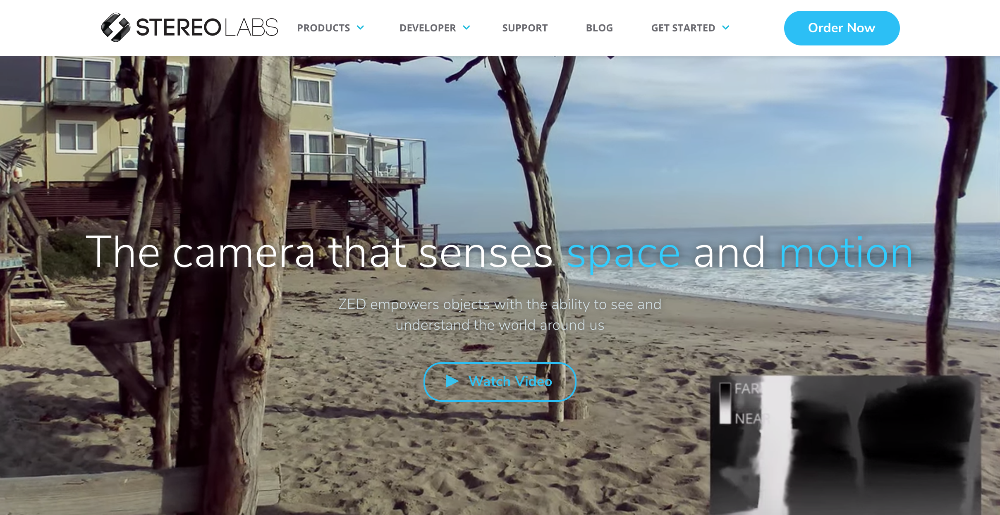

In progress . . .
Slippery Rock University 3D Interactive Map
Using the ZED Stereo Camera

This application will give interested students the opportunity to use a 3D Virtual Interactive Map to view the campus as a whole, right from their phone or website!
The developers will be scanning the campus using the ZED Stereo
Camera.
The ZED Stereo Camera has the ability to accurately calculate space and motion with its specifications of depth, motion, and technical sensors.
This specialized camera will give our team the opportunity to realistically scan
the campus and create 3D object imaging.